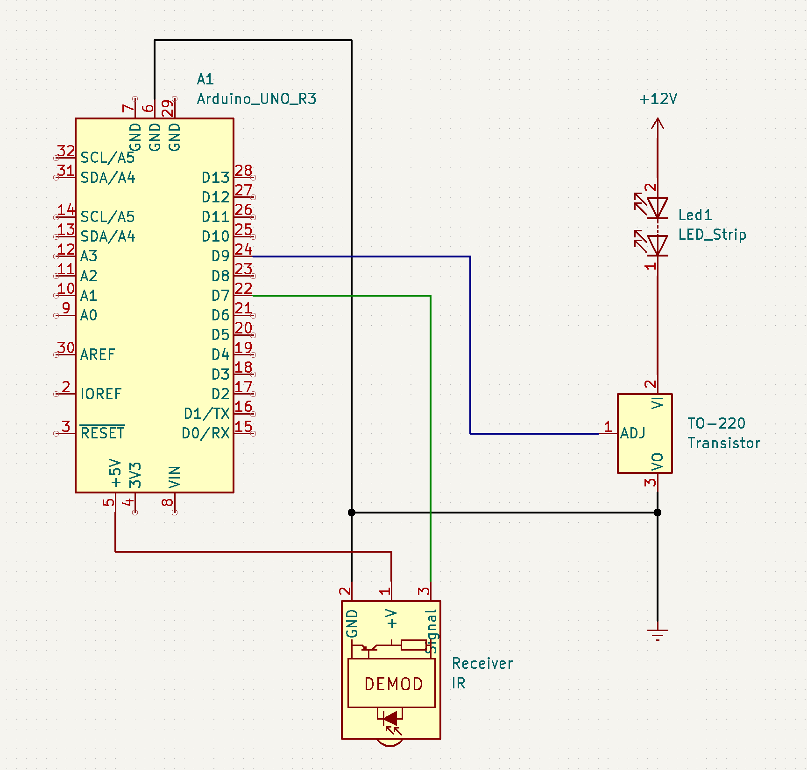

Richard's Assignment 5!

Here is all the documentation for assignment 5!

Couldn't find the symbol for LED strips in KiCad so I just used a series LED for replacement. Hope its ok.
This set up uses the IR remote library to allow the user to turn on and off, and brighten and dim a LED strip. Since the LED
strip has built in resistors for the LEDs, no external resistor is needed. The LED strip uses a 12V power source while the IR
receiver only uses 5V. The transistor is being controlled by pin 9 which determines the output value for the 12V source.
Breadboard setup.
Code for this LED strip controller set up:
#include <IRremote.h> // Using the IR remote library
int IR_RECV_PIN = 7; // Setting receiver pin to pin 7
int led = 9; // This pin controls the 12V LED strip through the transistor
int brightness = 120; // Initial brightness
boolean power = false; // Power button state
IRrecv irrecv(IR_RECV_PIN); // Initiate the pin
decode_results results; // Initiate results from IR decoding
void setup() {
Serial.begin(9600);
irrecv.enableIRIn(); // Start the receiver
pinMode(led, OUTPUT); // Setting transistor pin to output to control the current
}
// When the power button is pressed, turn the LED strip on. Otherwise, turn it off.
// When the up and down arrows are pressed, turn the LED strip brighter or dimmer.
void loop() {
// Just to make sure the analogWrite values for brightness stays within 0-255
if (brightness > 255) {
brightness = 250;
}
if (brightness < 0) {
brightness = 0;
}
// If the receiver receives a signal
if (irrecv.decode(&results)) {
// Case for when power button is pushed
switch(results.value) {
case 0xFFA25D: // Power button hex code
Serial.println("pressed power"); // Using this to test output
// If power is on, turn it off.
if (power == true) {
analogWrite(led, 0);
}
// If power is off, turn it on.
if (power == false) {
analogWrite(led, brightness);
}
power = !power; // Sets power to the other state
}
// Case for when down arrow button is pushed
switch(results.value){
case 0xFFE01F: // Down arrow hex
Serial.println("pressed arrowDown"); // Using this to test output
// If the power is on and brightness is greater than 0, can be dimmed
if (power == true && brightness > 0) {
brightness -= 10; // Brightness goes down by 10
analogWrite(led, brightness); // Writes this brightness to the LED strip
}
}
// Case for when up arrow button is pushed
switch(results.value){
case 0xFF906F: // Up arrow hex
Serial.println("pressed arrowUp"); // Using this to test output
// If the power is on and brightness is smaller than 250, can be brightened
if (power == true && brightness < 250) {
brightness += 10; // Brightness goes up by 10
analogWrite(led, brightness); // Writes this brightness to the LED strip
}
}
irrecv.resume(); // Resumes the remote readings
}
}